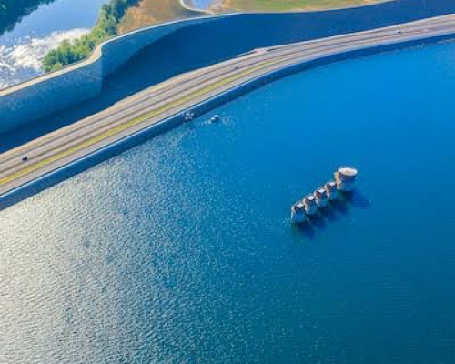
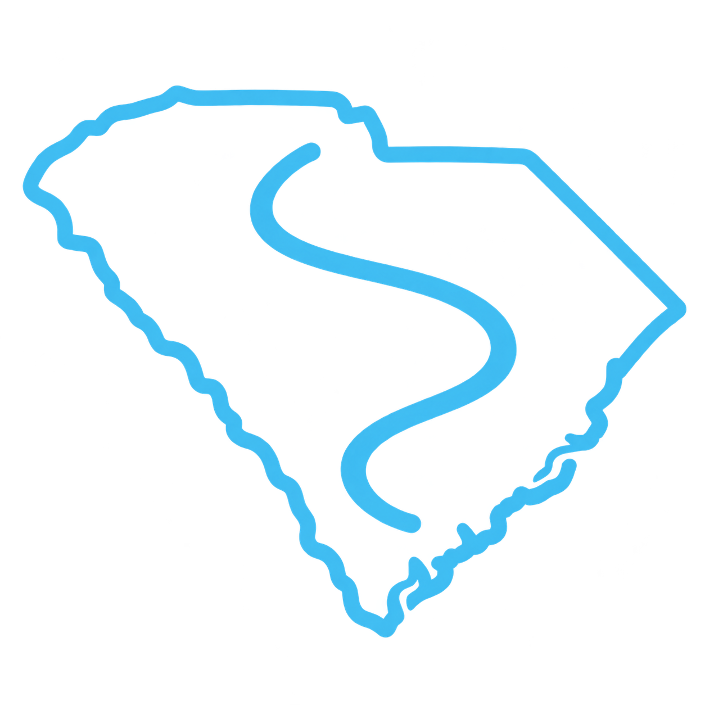
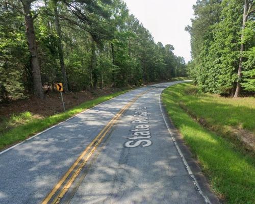

Lake Murray Loop
62miA scenic and easy route around Lake Murray with many opportunities to stop.
View Route
SC MIDLANDSRIDING ROUTES Submit Route
A scenic and easy route around Lake Murray with many opportunities to stop.
View RouteCamden to Great Falls via the west side of Lake Wateree. A great alternative to the interstate!
View Route
A scenic and easy loop around the western side of Winnsboro up to Chester and back.
View Route